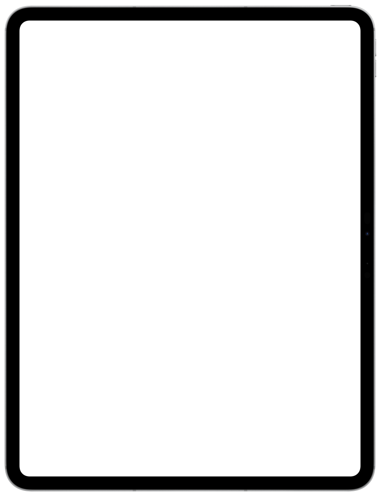

You finished the animation on your iPad. It looks perfectan iPad playing the animation. Then you put it on your site and it sits in a black boxthe animation alone on a black box


How to use it
- Bring in your animation.Tap + and choose Files or Photos, or tap Share in your animation app and choose Glimmerglass. The sample, Gatocat, is already in your library to try.
- Check it big.Open an animation and it plays big in a square, with a play bar under it. Zoom shows it to fit, or each size at 100%.
- Tap Edit.Animation, Playback, Output and Poster each hold a few settings. Changes save as you go.
- Export.You get one .glim: every size you ticked, in both video formats, with a still poster. Frames that repeat are only encoded once.
- Use it.Send it to Framer, save the .glim, or tap Share to make a see-through video for Keynote, a chroma-key video for TikTok, CapCut or Shorts, or a Telegram sticker.
Before & after

What goes in
One animation file, or a pile of frames:
- MOV with transparency (HEVC with alpha or ProRes 4444), or WebM
- Animated PNG, animated WebP or GIF
- A folder or .zip of equally sized PNG or WebP frames
- A .glim you already made
Up to 120 seconds, 7,200 frames and 16 megapixels a frame. A file ending in .mp4 does not necessarily contain transparency. Glimmerglass keeps transparency; it does not cut out a background.
Why a .glim is worth it
One file that holds your animation at every size.
- Every size you tick, in both video formats.
- The player picks the size and format each visitor plays best.
- One file to upload, move or replace.
- Your Playback settings saved inside it.
- Made on your device. Nothing is uploaded.
What you can set
Under Playback, saved inside the .glim:
- Play: always, on hover or in view
- Hover Area: the artwork or its container
- Pausable: let visitors pause and play
- Speed: 0.25× to 4×
- Loop: on, or play once
- Play bar: hidden or shown
- Fit: contain, cover or fill
- Background: none, or a colour
And under Animation, Alt Text: describe it for screen readers and search engines.
In Framer you set these in the properties panel. Other pages use their own settings for now: the web player is learning to read them.
Your library
Your animations live in the app, and in your own iCloud Drive when it’s turned on, so your iPhone, iPad and Mac show the same ones.
Nothing is stored on our servers. A deleted animation stays in the app’s trash for 30 days.
Put it in Framer
Your App Store purchase includes a key for the Glimmerglass plugin in Framer. In the app, open Settings › Framer plugin key and tap Get my key, then paste it into the plugin when it asks.
Send the .glim to your computer with AirDrop or Files and drop it into the plugin. It places the animation without converting it again.
When something goes wrong
Include your device, operating-system version, source format and the exact error. You don’t need to send your artwork unless we ask for a sample.
mike@houseofkoco.comIt says the animation has no transparency
Glimmerglass keeps transparency; it does not cut out a background. Export your animation with a transparent background, or choose to keep its background when the app asks.
A long animation won’t export
Long animations and large frames need more memory and free space. Free up some space, or start with a shorter clip.
The finished .glim is a different size from the estimate
Estimates come from a short sample and are rounded up, so the finished file is usually a little smaller. Long animations whose motion changes a lot can differ more.
Does the app need the internet?
Only to get your Framer plugin key, once, when you ask for it. See privacy.